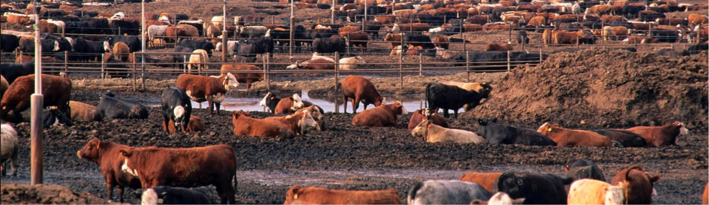

According to the Union of Concerned Scientists, traditional agricultural practices account for 70% of all drugs used in the U.S. annually. This results in greater rates of death and disease in humans, cattle, wildlife, and birds as well as triggering the rapid growth of antibiotic resistant bacteria. We convert agricultural operations to be organic, sustainable and wildlife-friendly. We do this by managing our farming and ranching practices in a manner that enhances wildlife habitat, as well as limiting (or, eliminating) the use of herbicides and pesticides. We have raised and/or pastured organic sheep, organic beef cows and organic bison.
Organic & Sustainable Agriculture
Before
